3.6.3 Isosurface Object
|
You know you have been raytracing too long when ...
|
|
... You find yourself wishing you'd paid attention in math class
to all those formulae you thought you'd never have any use for
in real life.
|
|
-- Jeff Lee
|
Isosurfaces are shapes described by mathematical functions.
In contrast to the other mathematically based shapes in POV-Ray, isosurfaces
are approximated during rendering and therefore they are sometimes more
difficult to handle. However, they offer many interesting possibilities.
Some knowledge about mathematical functions and geometry is useful,
but not necessarily required to work with isosurfaces.
3.6.3.1 simple functions
For the start we will choose a most simple function: x
The value of this function is exactly the current x-coordinate.
The isosurface object takes this function as a
user defined function:
isosurface {
function { x }
contained_by { box { -2, 2 } }
}
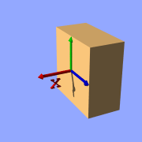
Isosurface sample (function { x })
the resulting shape is fairly simple: a box.
The fact that it is a box is only caused by the container object which is
required for an isosurface. You can either use a box or a sphere for this
purpose.
So only one side of the box is made by the function in fact. This surface
is where the x-coordinate is 0 since 0 is the default threshold. There usually
is no reason to change this, since it is the most common and most suggestive
value, but you can specify something different by adding
threshold 1
to the isosurface definition.
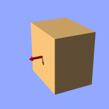
Isosurface sample (function { x }, threshold 1)
As you can see, the surface is now at x-coordinate 1.
We can also remove the visible surfaces of the container object by adding
the word 'open' to the isosurface definition.
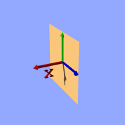
Isosurface sample (function { x }, open)
For making it clearer what surfaces are the actual isosurface and what are
caused by the container object, the color will be different in all the
following pictures.
Now we replace the used function with something different:
function { x+y }
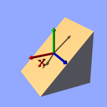
Isosurface sample (plane function)
function { x+y+z }
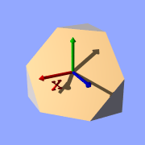
Isosurface sample (plane function)
Note: 'max_gradient 4' is added to the isosurface definition here,
this will be explained later on.
All these functions describe planes going through the origin. The
function just describes the normal vector of this plane.
3.6.3.2 several surfaces
The following two functions lead to identical results:
function { abs(x)-1 }
function { sqrt(x*x)-1 }

Isosurface sample (function { abs(x)-1 }, open)
You can see that there are two planes now. The reason is that both formulas
have the same two solutions (where the function value is 0),
namely x=-1 and x=1.
We can now mix all these elements in different combinations, the results
always consist of plane surfaces:
function { abs(x)-1+y }

Isosurface sample (combined linear functions)
function { abs(x)+abs(y)+abs(z)-2 }
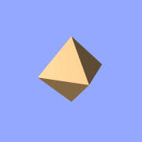
Isosurface sample (combined linear functions)
3.6.3.3 non-linear functions
Curved surfaces of many different kinds can be achieved with non-linear
functions.
function { pow(x,2) + y }
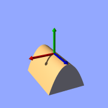
Isosurface sample (non-linear function)
You can see the parabolic shape caused by the square function.
To get a cylindrical surface we can use the following function.
function { sqrt(pow(x,2)- + pow(z,2)) - 1 }
In 2 dimensions it describes a circle, since it is constant in the 3rd
dimension, we get a cylinder:
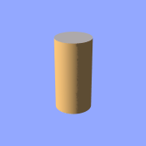
Isosurface sample (cylinder function)
It is of course not difficult to change this into a cone, we just need
to add a linear component in y-direction:
function { sqrt(pow(x,2) + pow(z,2)) + y }
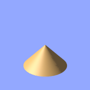
Isosurface sample (cone function)
And we of course can also make a sphere:
function { sqrt(pow(x,2) + pow(y,2) + pow(z,2)) - 2 }
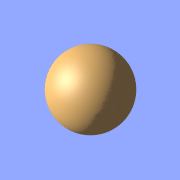
Isosurface sample (sphere function)
The 2 specifies the radius here.
3.6.3.4 internal functions
There are a lot of internal functions available in POV-Ray. For example
a sphere could also be generated with function { f_sphere(x, y, z, 2) }
These functions are declared in the functions.inc include file.
Most of them are more complicated and it's usually faster to use them instead of a
hand coded equivalent. See the
complete list for details.
The following makes a torus just like POV-Ray's torus object:
#include "functions.inc"
isosurface {
function { f_torus(x, y, z, 1.6, 0.4) }
contained_by { box { -2, 2 } }
}
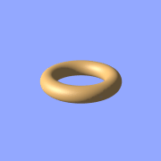
Isosurface sample (torus function)
The 4th and 5th parameter are the major and minor radius,
just like the corresponding values in the torus{} object.
The parameters x, y and z are required, because it is a declared function.
You can also declare functions yourself like it is explained in the
reference section.
3.6.3.5 Combining isosurface functions
We can also simulate some Constructive Solid Geometry with isosurface functions. If
you don't know about CSG we suggest you have a look at
"What is CSG?" or the corresponding
part of the reference section first.
We will take two functions: a cylinder and a rotated box:
#declare fn_A = function { sqrt(pow(y,2) + pow(z,2)) - 0.8 }
#declare fn_B = function { abs(x)+abs(y)-1 }
If we combine them the following way, we get a "merge":
function { min(fn_A(x, y, z), fn_B(x, y, z)) }
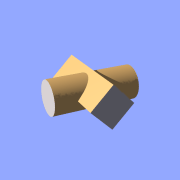
Isosurface sample (merge)
An "intersection" can be obtained by using
max() instead of min():
function { max(fn_A(x, y, z), fn_B(x, y, z)) }
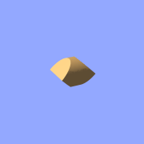
Isosurface sample (intersection)
Of course also "difference" is possible, we just have to
add a minus (-) before the second function:
function { max(fn_A(x, y, z), -fn_B(x, y, z)) }
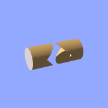
Isosurface sample (difference)
Apart from basic CSG you can also obtain smooth transits between the
different surfaces (like with the blob object)
#declare Blob_threshold=0.01;
isosurface {
function {
(1+Blob_threshold)
-pow(Blob_threshold, fn_A(x,y,z))
-pow(Blob_threshold, fn_B(x,y,z))
}
max_gradient 4
contained_by { box { -2, 2 } }
}
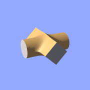
Isosurface sample (blob)
The Blob_threshold value influences the smoothness of
the transit between the shapes. a lower value leads to sharper edges.
3.6.3.6 noise and pigment functions
Some of the internal functions
have a random or noise-like structure
Together with the pigment functions they are one of the most powerful tools
for designing isosurfaces. We can add real surface displacement to the objects
rather than only normal perturbation known from the
normal{} statement.
The relevant internal functions are:
f_noise3d(x,y,z)
uses the noise generator specified in
global_settings{} and generates structures like the bozo pattern.f_noise_generator(x,y,z, noise_generator)
generates noise with a specified noise generator.f_ridged_mf(x,y,z, H, Lacunarity, Octaves, Offset, Gain, noise_generator)
generates a ridged multifractal pattern.f_ridge(x,y,z, Lambda, Octaves, Omega, Offset, Ridge, noise_generator)
generates another noise with ridges.f_hetero_mf(x,y,z, H, Lacunarity, Octaves, Offset, T, noise_generator)
generates heterogenic multifractal noise.
Using pure noise3d as a function results in the following picture:
function { f_noise3d(x, y, z)-0.5 }
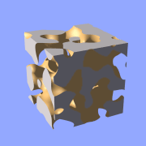
Isosurface sample (noise3d)
Note: the -0.5 is only there to make it match to the used
threshold value of 0, the f_noise3d function returns values between
0 and 1.
With this and the other functions you can generate objects similar to
heightfields, having the advantage that a high resolution can be achieved
without high memory requirements.
function { x+f_noise3d(0, y, z) }
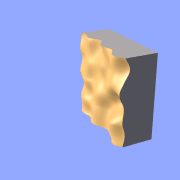
Isosurface sample (noise3d 'heightfield')
The noise function can of course also be subtracted which results in an
'inverted' version:
function { x-f_noise3d(0, y, z) }
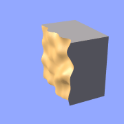
Isosurface sample (noise3d 'heightfield' inverted)
In the last two pictures we added the noise function to a plane function.
The x-parameter was set to 0 so the noise function is constant in x-direction.
This way we achieve the typical heightfield structure.
Of course we can also add noise to any other function. If the noise function
is very strong this can result in several separated surfaces.
function { f_sphere(x, y, z, 1.2)-f_noise3d(x, y, z) }
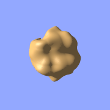
Isosurface sample (noise3d on sphere)
This is a noise function applied to a sphere surface, we can influence
the intensity of the noise by multiplying it with a factor and change the
scale by multiplying the coordinate parameters:
function { f_sphere(x, y, z, 1.6)-f_noise3d(x*5, y*5, z*5)*0.5 }
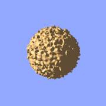
Isosurface sample (noise3d on sphere scaled)
As alternative to noise functions we can also use any pigment in a function:
#declare fn_Pigm=function {
pigment {
agate
color_map {
[0 color rgb 0]
[1 color rgb 1]
}
}
}
This function is a vector function returning a (color) vector. For use in
isosurface functions we have to specify the component to use (for details see the
reference section).
function { f_sphere(x, y, z, 1.6)-fn_Pigm(x/2, y/2, z/2).gray*0.5 }
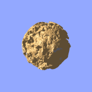
Isosurface sample (pigment function)
There are quite a lot of things possible with pigment functions, but you
probably have recognized that this renders quite slow.
3.6.3.7 accuracy, max_gradient, etc.
To optimize the approximation of the isosurface and to get maximum
rendering speed it is important to adapt certain values (see also
"Improving Isosurface Speed"
in the reference section).
accuracy
The accuracy value influences how accurate the surface geometry is calculated.
Lower values lead to a more precise, but slower result.
The default value of 0.001 is fairly low. We used this value in all the
previous samples, but often you can raise this quite a
lot and thereby make things faster.
max_gradient
For finding the actual surface it is important for POV-Ray to know the
maximum gradient of the function, meaning how fast the function value changes.
We can specify a value with the max_gradient keyword. Lower
max_gradient values lead to faster rendering, but if the specified value is
below the actual maximum gradient of the function, there can be holes or
other artefacts in the surface.
For the same reason functions with infinite gradient should not be used.
This applies for pigment functions with brick or checker pattern for example.
You should also be careful when using select() in isosurface
functions because of this.
If the real maximum gradient differs too much from the specified value
POV-Ray prints a warning together with the found maximum gradient.
It is usually sufficient to use this number for the max_gradient
parameter to get fast and correct results.
POV-Ray can also dynamically change the max_gradient when you
specify evaluate with 3 parameters the isosurface definition.
Concerning the details on this and other things see the
reference section.